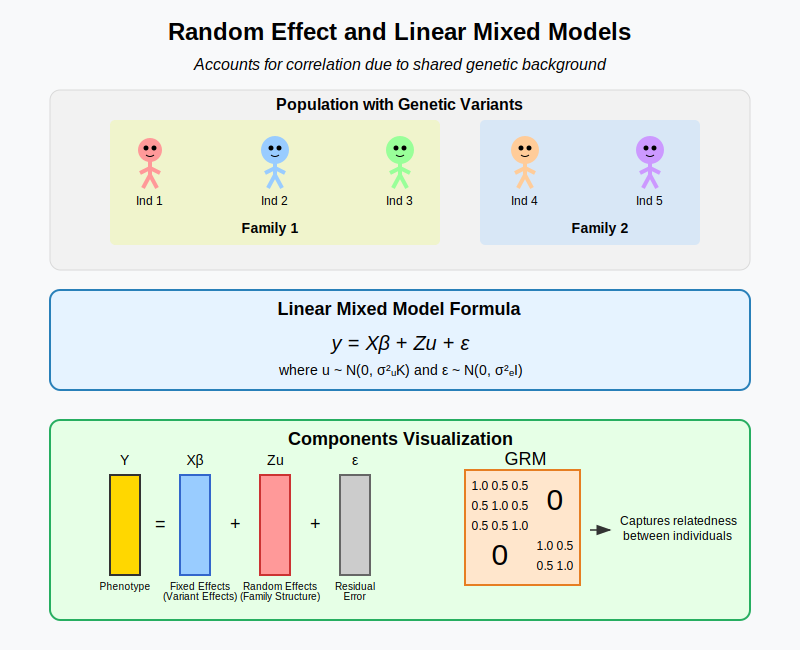

Intuitional Description#
The random effect model in statistical genetics allows us to account for correlation between individuals due to shared genetic background (like family relationships) by partitioning variance into fixed effects (specific genetic variants we’re testing) and random effects (overall genetic similarity within groups).
Graphical Summary#

Key Formula#
In the linear mixed model (mixed because it incorporate both the fixed and the random effects), which accurately represent non-independent data structures,
where:
\(\mathbf{Y}\) is the \(N \times 1\) vector of phenotypes
\(\mathbf{X}\) is the \(N \times M\) design matrix for fixed effects (e.g., genotypes, covariates)
\(\boldsymbol{\beta}\) is the \(M \times 1\) vector of fixed effect coefficients (unknown, to be estimated)
\(\mathbf{Z}\) is the \(N \times M\) design matrix for random effects
\(\mathbf{u}\) is the \(M \times 1\) vector of random effects, where \(\mathbf{u} \sim N(0, \sigma^2_u\mathbf{G})\) (unknown)
\(\mathbf{G}\) is the relationship matrix between the \(N\) individuals
\(\boldsymbol{\epsilon}\) is the \(N \times 1\) vector of residual errors, where \(\boldsymbol{\epsilon} \sim N(0, \sigma^2_e\mathbf{I})\)
Technical Details#
With the standard linear mixed model (LMM) defined as above, we can explicitly derive the following important results:
Variance-Covariance Structure $\(\mathbf{V} = \mathbf{Z}\mathbf{G}\mathbf{Z}' + \mathbf{R}\)$
Best Linear Unbiased Estimator (BLUE) for Fixed Effects
Given known variance components, the solution for fixed effects is:
Best Linear Unbiased Predictor (BLUP) for Random Effects
Given known variance components and estimated fixed effects, the solution for random effects is:
Example#
In this genetic analysis example, we examine the relationship between genetic variants and height using random effect models.
The key steps include:
preparing genotype and phenotype data for 5 individuals with 3 genetic variants and height measurements, and standarize them
organizing individuals into family groups (individuals 1-3 in family 1, individuals 4-5 in family 2)
fitting random effect models for each variant using the
lmerfunction, which allows us to separate variant-specific effects from family-related genetic background.
The key information captured includes the effect size of each variant on height, the proportion of height variance explained by family relatedness versus the specific variant, and how accounting for family structure affects our understanding of genetic associations. Unlike fixed effect models that might attribute too much importance to specific variants, this approach helps control for the shared genetic background within families.
# Clear the environment
rm(list = ls())
# Load required packages
library(lme4) # For mixed-effect models
# Define genotypes for 5 individuals at 3 variants
# These represent actual alleles at each position
# For example, Individual 1 has genotypes: CC, CT, AT
genotypes <- c(
"CC", "CT", "AT", # Individual 1
"TT", "TT", "AA", # Individual 2
"CT", "CT", "AA", # Individual 3
"CC", "TT", "AA", # Individual 4
"CC", "CC", "TT" # Individual 5
)
# Reshape into a matrix
N = 5 # number of individuals
M = 3 # number of variants
geno_matrix <- matrix(genotypes, nrow=N, ncol=M, byrow=TRUE)
rownames(geno_matrix) <- paste("Individual", 1:N)
colnames(geno_matrix) <- paste("Variant", 1:M)
alt_alleles <- c("T", "C", "T")
# Convert to raw genotype matrix using the additive / dominant / recessive model
Xraw_additive <- matrix(0, nrow=N, ncol=M) # dount number of non-reference alleles
rownames(Xraw_additive) <- rownames(geno_matrix)
colnames(Xraw_additive) <- colnames(geno_matrix)
for (i in 1:N) {
for (j in 1:M) {
alleles <- strsplit(geno_matrix[i,j], "")[[1]]
Xraw_additive[i,j] <- sum(alleles == alt_alleles[j])
}
}
X <- scale(Xraw_additive, center=TRUE, scale=TRUE)
# assign observed height for the 5 individuals
Y_raw <- c(180, 160, 158, 155, 193)
Y <- scale(Y_raw)
# Add family information (individuals 1,2,3 are from family 1, and 4,5 from family 2)
family_info <- c(1, 1, 1, 2, 2)
# Create a data frame for analysis with scaled genotypes
genetic_data <- data.frame(
height = Y,
family = family_info,
individual = 1:N,
X # This directly adds all columns of X to the dataframe
)
# Rename the genotype columns for clarity
colnames(genetic_data)[4:(3+M)] <- paste0("variant", 1:M)
genetic_data
| height | family | individual | variant1 | variant2 | variant3 | |
|---|---|---|---|---|---|---|
| <dbl> | <dbl> | <int> | <dbl> | <dbl> | <dbl> | |
| Individual 1 | 0.6528093 | 1 | 1 | -0.6708204 | 0.2390457 | 0.4472136 |
| Individual 2 | -0.5560968 | 1 | 2 | 1.5652476 | -0.9561829 | -0.6708204 |
| Individual 3 | -0.6769875 | 1 | 3 | 0.4472136 | 0.2390457 | -0.6708204 |
| Individual 4 | -0.8583234 | 2 | 4 | -0.6708204 | -0.9561829 | -0.6708204 |
| Individual 5 | 1.4385984 | 2 | 5 | -0.6708204 | 1.4342743 | 1.5652476 |
# Perform random effect model analysis for each variant separately
random_models <- list()
random_model_summaries <- list()
for (j in 1:M) {
variant_col <- paste0("variant", j)
formula <- as.formula(paste("height ~", variant_col, "+ (1|family)"))
# Fit random effect model
random_models[[j]] <- lmer(formula, data = genetic_data)
random_model_summaries[[j]] <- summary(random_models[[j]])
# Extract and print key information
fixed_effects <- fixef(random_models[[j]])
random_variance <- as.numeric(VarCorr(random_models[[j]])$family)
residual_variance <- attr(VarCorr(random_models[[j]]), "sc")^2
cat("\nEffect size (beta):", fixed_effects[2], "\n")
cat("Family variance component:", random_variance, "\n")
cat("Residual variance component:", residual_variance, "\n")
cat("Proportion of variance due to family:", random_variance / (random_variance + residual_variance), "\n")
}
boundary (singular) fit: see help('isSingular')
Effect size (beta): -0.5000913
Family variance component: 0
Residual variance component: 0.9998782
Proportion of variance due to family: 0
boundary (singular) fit: see help('isSingular')
Effect size (beta): 0.8525024
Family variance component: 0
Residual variance component: 0.3643196
Proportion of variance due to family: 0
Effect size (beta): 1.04884
Family variance component: 0.04201681
Residual variance component: 0.007307271
Proportion of variance due to family: 0.8518519
# Compare effects across variants
variant_effects <- sapply(random_models, function(model) fixef(model)[2])
names(variant_effects) <- paste0("Variant ", 1:M)
cat("\n---------- Effect Sizes Across Variants ----------\n")
print(variant_effects)
# Compare variance components across variants
variance_components <- lapply(random_models, function(model) {
vc <- VarCorr(model)
family_var <- as.numeric(vc$family)
residual_var <- attr(vc, "sc")^2
c(family_var = family_var,
residual_var = residual_var,
proportion_family = family_var / (family_var + residual_var))
})
variance_df <- do.call(rbind, variance_components)
rownames(variance_df) <- paste0("Variant ", 1:M)
cat("\n---------- Variance Components Across Variants ----------\n")
print(variance_df)
---------- Effect Sizes Across Variants ----------
Variant 1 Variant 2 Variant 3
-0.5000913 0.8525024 1.0488402
---------- Variance Components Across Variants ----------
family_var residual_var proportion_family
Variant 1 0.00000000 0.999878212 0.0000000
Variant 2 0.00000000 0.364319641 0.0000000
Variant 3 0.04201681 0.007307271 0.8518519